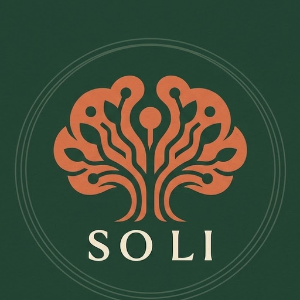

آرامش حق شماست، ما کنارتان هستیم
ذهنِ تو یک کهکشان است
سولیسول، کلینیک روانشناسی سولماز یزدانی — رواندرمانگر بالینی. اینجا یاد میگیرید اسرار روان خود را کشف کنید، ظرفیت ذهنیتان را قویتر کنید و به زندگیِ رضایتبخش برسید. حرکت کنید؛ ذرات با شما دگرگون میشوند.
۰۱ · شناخت
اضطراب را مدیریت کنید، زندگی را مدیریت کنید
هر مسیر درمانی از مشاهده آغاز میشود. افکار وسواسی و نگرانیهای تکرارشونده — همان کلماتی که دور این ذهن میچرخند — پیامهای روان شما هستند. با ارزیابی دقیق و مصاحبهی بالینی، نقشهی ذهن را روشن میکنیم. GAD را شکست میدهیم، آرامش را هدیه میکنیم.
- ارزیابی روانشناختی
- درمان اضطراب و استرس
- درمان وسواس فکری و عملی
- پرسشنامه آنلاین سولیسول ←
- آزمون GAD-7 ←
۰۲ · احساس
بعد، به قلب گوش میدهیم
احساسها پیاماند، نه مزاحم. در فضایی امن یاد میگیریم خشم، اضطراب و غم را نامگذاری کنیم و بهجای سرکوب، با آنها گفتوگو کنیم. رابطهها هم همینجا ترمیم میشوند — درمان یعنی شنیدهشدن.
- مشاوره فردی
- زوجدرمانی
- پرورش روابط عاطفی
- درمان افسردگی
۰۳ · شکوفایی
سپس، شکوفا میشویم
تغییر، ناگهانی نیست؛ گلبرگبهگلبرگ باز میشود. با تمرینهای هفتگی و برنامهی شخصیسازیشده، مهارتهای تازه در زندگی واقعی ریشه میدوانند — در تحصیل، در کار، در نگاه به خود.
- رفتاردرمانی
- کوچینگ
- برنامهریزی تحصیلی
- مشاوره تحصیلی
۰۴ · آرامش
و در پایان، آرامش
آرامش یعنی ذهنی که دیگر با خودش نمیجنگد؛ کهکشانی که در مدار خودش میچرخد. جلسههای پیگیری کمک میکنند این مدار پایدار بماند — چون آرامش حق شماست.
- جلسههای پیگیری
- پیشگیری از بازگشت
- مراقبت بلندمدت
۰۵ · مجله سولیسول
خواندنیهای ذهن آرام
آزمون GAD-7: ابزاری سریع برای ارزیابی اضطراب فراگیر
خواندن مقاله ← زندگی و پولاضطراب فراگیر و پول: چگونه نگرانی مالی به GAD دامن میزند؟
خواندن مقاله ← درمانآیا GAD همیشه نیاز به درمان دارد؟ نگاهی متفاوت به مداخلات پزشکی
خواندن مقاله ← کودکاناضطراب فراگیر در کودکان: راهنمای والدین
خواندن مقاله ←
گفتوگو
سفرِ شما از یک پیام شروع میشود
برای رزرو وقت مشاورهی حضوری یا آنلاین با سولماز یزدانی، همین حالا پیام بدهید.
+34 610 98 78 12